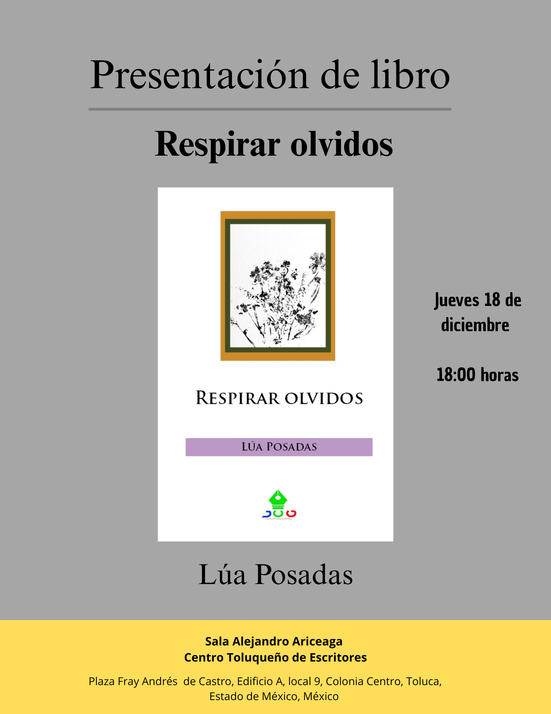

Lúa Posadas escribe breve, muy breve, pero su brevedad no sólo implica un sentimiento, sino que lleva imágenes que se visten con lo cotidiano, el entorno en el cual habita de forma intensa y sencilla. Respirar olvidos es esa recuperación de las imágenes que no vemos, el sonido leve de una calle, el aleteo de un ave que no se alcanza a distinguir, o los gritos que brotan inclementes en el universo de Lúa.